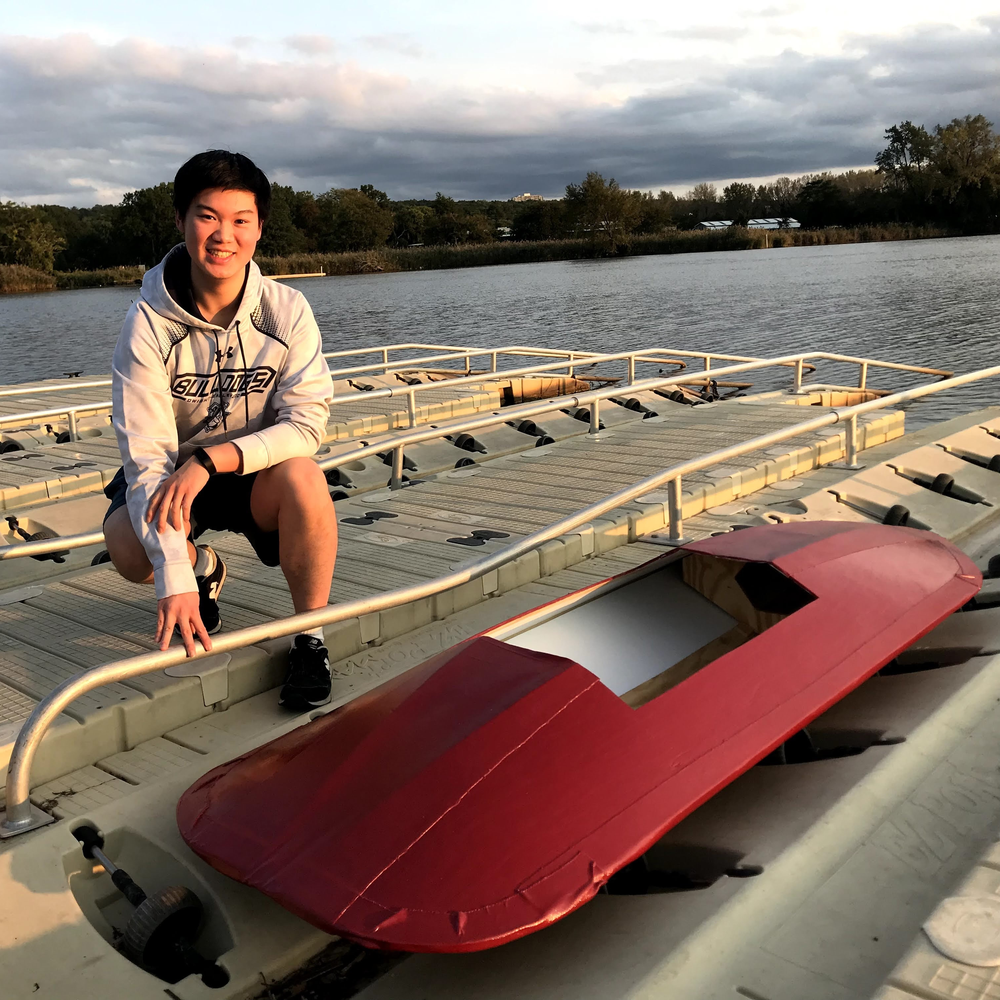
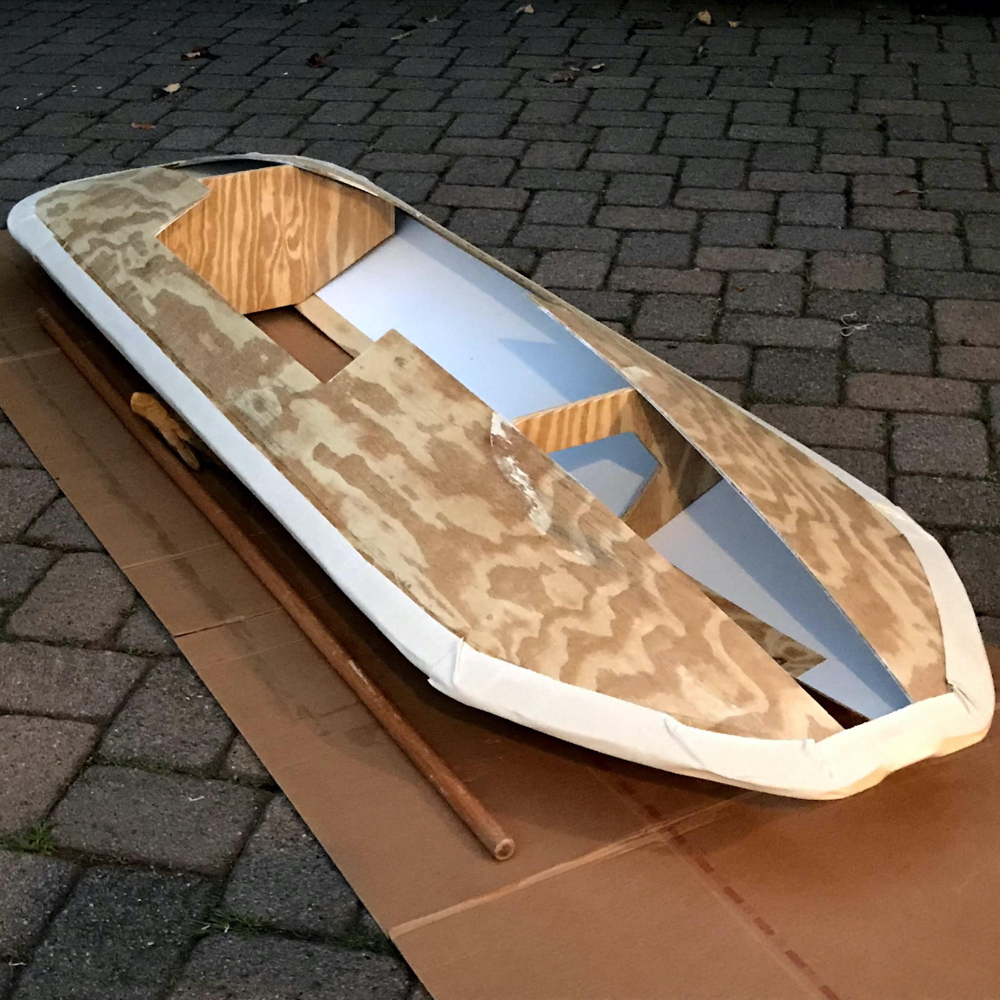

Hello!


I'm Kenneth, a History and Computer Science double major at Yale University. I enjoy playing with code, writing, and making things.
My academic and professional interests are at the intersection of the humanities and technology. Some questions I think about are:
How can we effectively communicate technology to various audiences?
How can we better visualize and comprehend data?